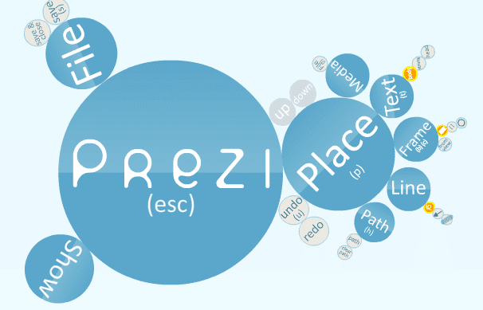
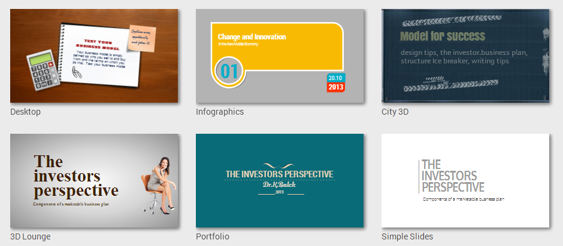
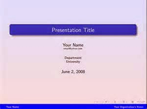

La utilización de transparencias se ha convertido en un estándar en todo tipo de exposiciones y las clases expositivas en la universidad y otros niveles educativos no son una excepción.
El PowerPoint es con mucho la herramienta más utilizada para este fin y tiene tantos amantes como detractores. Dado que muchas presentaciones con PowerPoint son mortalmente aburridas y que en el mercado existen múltiples alternativas, vamos a repasar algunas opciones.
¿Merece la pena abandonar el PowerPoint?
En mi opinión, depende. ¿Por qué fracasa una presentación? El primer motivo de fracaso es considerar las transparencias simplemente como otra forma de exposición de un documento. Transparencias llenas de texto, con interminables listas de viñetas son una receta segura para los bostezos. Si vamos a utilizar transparencias como apoyo a una presentación oral, no deberíamos incluir en pantalla lo que vamos a contar, ya que si la audiencia está leyendo no puede escucharnos al mismo tiempo. Si lo que pretendemos es distribuir material completo, quizás deberíamos proporcionar a los estudiantes un documento en .pdf en lugar de una colección de transparencias.
Una primer solución que todos hemos probado para distinguir una presentación de un documento, es la inclusión de imágenes y efectos visuales.
Imágen de http://unlearningtech.blogspot.com.es/
Sin embargo, esta solución conlleva peligros aún mayores que el simple copia-pega de un documento de texto. En PowerPoint es increíblemente fácil incluir gráficos, imágenes, animaciones y todo tipo de contrastes visuales. La tentación de usar todo su potencial es, a veces, demasiado grande. Una presentación de este tipo dispersa totalmente la atención de la audiencia y no permite seguir la exposición.
Para mejorar el material de exposición, no es necesario cambiar de software sino simplemente ser conscientes de ciertas reglas básicas:
- El interés de la exposición debe estar en el ponente, no en la pantalla.
- Las transparencias son un apoyo para el público, no la chuleta del ponente.
- En general, menos es más. Cada transparencia debe contener solamente una idea.
- La presentación debe tener siempre una introducción atractiva y un resumen final.
Existen muchísimos recursos en la red para poder desarrollar presentaciones atractivas sea cual sea la plataforma que utilicemos. A mi me gustan especialmente El arte de presentar y Muerte por Power Point. En ambos casos, se tratan en profundidad conceptos de diseño que son básicos para poder hacer una buena presentación.
¿Entonces nos quedamos con Power Point?
No necesariamente.
Plataformas online
Aunque se pueden hacer muy buenas presentaciones .ppt existen alternativas que tienen distinto potencial. En primer lugar, han proliferado las plataformas que permiten desarrollar material directamente en línea. La ventaja de esto es que se puede acceder a la presentación desde cualquier dispositivo con un navegador sin necesidad de instalar software adicional. El problema es que, dependiendo del equipo con el que trabajemos, estas plataformas a veces son algo lentas y que, obviamente, deberemos estar conectados para poder trabajar.
Entre estas soluciones, la más conocida es Prezi, que triunfa sobre todo entre los estudiantes.

Prezi permite efectos visuales muy interesantes y, en mi opinión, es muy adecuada cuando queremos presentar información que se ajusta bien a una distribución “espacial”. Si desarrollamos una presentación organizada linealmente (e.g.: introducción, desarrollo, conclusiones) en Prezi podemos cambiar la “Muerte por PowerPoint” por “Serio Mareo por Prezi”. Aún así, es una opción a tener muy en cuenta, considerando además los planes educativos especiales que permiten acceder a características Premium sin coste adicional.
Pero Prezi no es el único editor online interesante. Entre otras opciones online destacan Emaze y Haiku Deck.

Emaze ofrece también una cuenta premium gratuita durante una año para educadores y permite elaborar presentaciones muy limpias y atractivas.
Abandonando el WYSIWYG
What You See Is What You Get
El concepto WYSIWYG se refiere al software de edición que se basa en aspectos visuales, donde se pueden modificar los formatos y la posición de los distintos elementos aplicando botones o moviéndolos con el ratón y viendo permanentemente en pantalla el resultado final. Todas las opciones anteriores pertenecen a esta categoría.
Frente a esta idea, encontramos otras opciones denominadas por contraposición WYSIWYM (What You See Is What You Mean). En este esquema, el contenido está separado de los aspectos de formato, de modo que introducimos por un lado los contenidos y por otro, tenemos que introducir los códigos relativos a los formatos. Por ejemplo, tendríamos que indicar que una determinada frase es un título, que un conjunto de palabras forma parte de una tabla o que una imagen va a una determinada distancia del margen derecho y a otra del margen inferior.
Para personas a las que les atrae trabajar con código, este esquema tiene bastantes ventajas. Por ejemplo, no hay posibilidad de que una imagen cambie de sitio dependiendo de la versión del software que usemos ni de que los títulos de un apartado aparezcan distintos que en otros a no ser que lo programemos específicamente. Además, la separación entre contenido y formato permite centrarse mejor en los aspectos centrales de una presentación y pulir después todo lo relativo a la apariencia de una sola vez.
Una opción relativamente popular que encaja en este esquema es Beamer. Beamer es una clase específica para transparencias dentro del lenguaje LaTex que resulta muy cómoda para aquellos ya familiarizados con el lenguaje.

Podemos usar editores online de LaTex o descargar un editor offline. En Beamer, cada transparencia es un “frame”. Como ejemplo, para hacer una nueva transparencia en Beamer, deberíamos escribir algo así:
\begin{frame}{Título de la transparencia}
\begin{enumerate} (para hacer una lista numerada* *\item Primer elemento
\ítem Segundo Elemento
\item Tercer elemento \end{enumerate}(Fin de la lista)\end{frame}(fin de la transparencia)Las transparencias de Beamer se pueden exportar a .PDF para la exposición y permiten incluir imagen, video y enlaces. LaTex es un lenguaje muy adecuado para las representaciones matemáticas, así que todo el que necesite incluir muchas ecuaciones o expresiones matemáticas en sus presentaciones debería considerar seriamente usar Beamer.
Otras alternativas: Presentaciones HTML
Dentro del esquema WYSIWYM, con las mismas ventajas que Beamer y con algún ventajas adicionales encontramos las presentaciones creadas en lenguaje web. Los navegadores que utilizamos (Internet Explorer, Mozilla, Chrome, Opera, etc…) interpretan código HTML y HTML5, con el que se incluyen imágenes, vídeos, distintas disposiciones de texto y cualquier elemento que encontramos en una página web y que pueden ser igualmente útiles en una presentación. Así pues, ¿por qué no diseñar una presentación como si fuera una página web? Esto tiene ventajas importantes:
- Podemos exponer en cualquier ordenador que disponga de un navegador sin preocuparnos de la compatibilidad de versiones de PowerPoint por ejemplo
- Podemos incrustar la presentación en cualquier página web, blog o plataforma de contenidos como Moodle o Sakai
- Podemos incluir elementos como páginas web incrustadas y presentar sin salir del modo de presentación de PowerPoint o Acrobat Reader para entrar en el navegador.
- Estas presentaciones se ven igual de bien en un ordenador, una tablet o un móvil, aspecto cada vez más importante.
- Podemos trabajar en la presentación con cualquier editor de texto (aunque uno pensado para HTML nos facilitará el trabajo ;))
Existen bastantes opciones para crear presentaciones según este esquema. Aquí están revisadas la mayoría.
Mi opción: Reveal.js
Tras esta exposición, es obvio que no hay una elección óptima para cada usuario. En mi caso, las ventajas de la última opción superan la ligera curva de aprendizaje necesaria para utilizarla, así que me he decantado por ir adaptando mis materiales a una de las opciones en HTML5: reveal.js.
knitr::include_url('https://revealjs.com/#/')Como podéis observar, en la parte inferior derecha de la pantalla hay unas flechas que permiten navegar por las diferentes transparencias. Además, hay una serie de controles adicionales interesantes:
- Si pulsamos la tecla ESC vemos el esquema de la presentación y pulsándola de nuevo volvemos a la diapositiva actual.
- Si pulsamos la tecla B, la pantalla pasa a negro para poder hacer comentarios sin dispersar la atención de la audiencia.
- Si pulsamos F, pasamos a vista completa.
- Si pulsamos alt+click hacemos zoom a distintas partes de la pantalla.
- También podemos incluir ejemplos de código y utilizar LaTex para escribir ecuaciones.
¿No está mal, no? En una próxima entrada, hablaré de cómo instalarlo y empezar a utilizarlo.